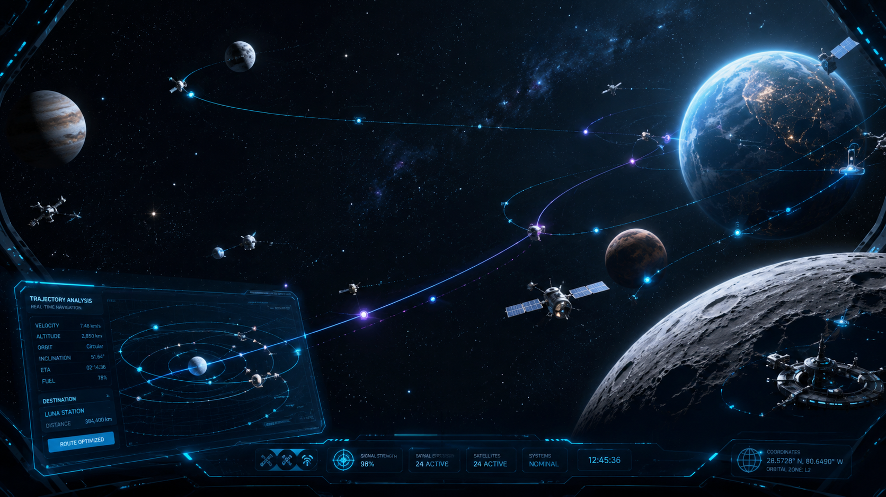

Sistema de posicionamento espacial que calcula rotas seguras em tempo real, evitando colisões orbitais.
O GPS do espaço para missões espaciais do futuro.

Mais de 27.000 objetos rastreados em órbita terrestre.
Satélites ativos, inativos e detritos espaciais.
Risco crescente do Efeito Kessler : colisões em cascata que podem tornar a órbita inutilizável por décadas.
NASA, ESA e Space-Track em tempo real
Mecânica orbital e cálculo de trajetórias
Análise em tempo real de densidade orbital